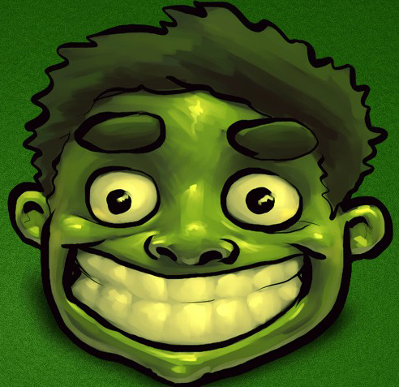

<!doctype html>
<html>
<head>
<meta charset="utf-8">
<style>
	body{
		overflow: hidden;
	}
	*{ 
		margin:0; 
		padding:0; 
		list-style:none; 
	}
	#div1{
		width:100px;
		height:100px;
		background:red;
		position: absolute;left:0;top:0;
	}
	.box{
		width:100px;
		height:100px;
		background:red;
		position: absolute;left:0px;top:0; 
		border-radius:50%;
	}
</style>

</head>

<body>
<script>
	var count = 0;
	window.onload = function(){
		
		for(var i = 0;i < 100;i++){
			setTimeout(addBox,Math.random()*10000);	
		}
	};

	function addBox(){
		var oBox = document.createElement('div');
		oBox.className = 'box';
		oBox.innerHTML = ''
		document.body.appendChild(oBox);
		var speedX = rnd(1,45);
		var speedY = rnd(20,60);
		var r = rnd(0,256);
		var g = rnd(0,256);
		var b = rnd(0,256);
		oBox.style.background = 'rgb('+r+','+g+','+b+')';
		
		move(oBox,speedX,speedY);
		drag(oBox);	
	}
	function rnd(n,m){
		return parseInt(n + Math.random()*(m - n));	
	}
	function drag(obj){
		var oDiv = obj;
		oDiv.onmousedown = function(ev){
			clearInterval(this.timer);
			var speedX = 0,speedY = 0;
			var lastX = 0,lastY = 0;
			
			var e = ev||event;
			var disX = e.clientX-oDiv.offsetLeft;
			var disY = e.clientY-oDiv.offsetTop;	
			document.onmousemove = function(ev){
				var e = ev || event;
				
				
				//记录最后一次last坐标
				lastX = oDiv.offsetLeft;
				lastY = oDiv.offsetTop;
				
				oDiv.style.left = e.clientX - disX + 'px';
				oDiv.style.top = e.clientY - disY + 'px';	
			};
			document.onmouseup = function(){
				document.onmousemove = document.onmouseup = null;	
				
				speedX = oDiv.offsetLeft - lastX;
				speedY = oDiv.offsetTop - lastY;
				
				console.log(speedX,speedY);
				move(oDiv,speedX,speedY);
			};
			return false;
		};	
	};
	function move(obj,speedX,speedY){
		clearInterval(obj.timer);
		obj.timer = setInterval(function(){
			speedY += 3;
			var l = obj.offsetLeft + speedX;
			var t = obj.offsetTop + speedY;
			if(t > document.documentElement.clientHeight - obj.offsetHeight){
				t = document.documentElement.clientHeight - obj.offsetHeight;
				speedY *= -0.8//反向,摩擦
				speedX *= 0.8//其他方向也要摩擦
			}else if(t < 0){
				t = 0;	//限定
				speedY *= -0.8;
				speedX *= 0.8;
			}
			if(l > document.documentElement.clientWidth - obj.offsetWidth){
				l = document.documentElement.clientWidth - obj.offsetWidth;
				speedX *= -0.8;
				speedY *= 0.8;
				
			}else if(l < 0){
				l = 0;
				speedX *= -0.8;
				speedY *= 0.8;
			}
			
			obj.style.left = l + 'px';
			obj.style.top = t + 'px';
				
			if(Math.abs(speedY) < 1) speedY = 0;
			if(Math.abs(speedX) < 1) speedX = 0;
			if(speedX == 0 && speedY == 0 && obj.offsetTop == document.documentElement.clientHeight - obj.offsetHeight){//?不完整
				clearInterval(obj.timer);
				document.body.removeChild(obj);
				count++;
				if(count == 100){
					console.log(count);
					document.body.style.background = 'url(4.jpeg)'
					//alert('老子出来了');	
				}
				console.log(count);
			}
		},30);
	}
</script>
</body>
</html>
